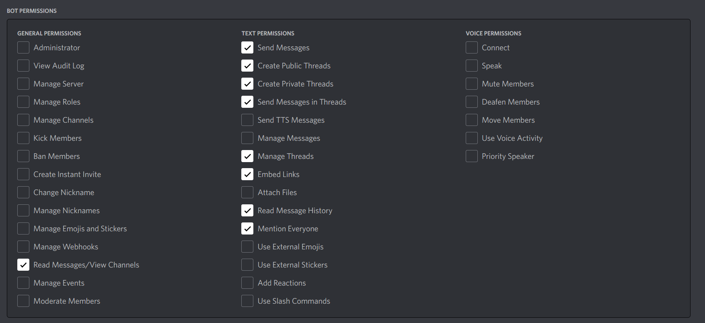

Getting started
The following guide will help you through the steps needed to run a minimal installation of Hyacinth.
Creating the Discord Bot
In order to connect Hyacinth to Discord, you must first configure an application for your bot in the Discord Developer Portal.
- In the Discord Developer Portal, create an application for Hyacinth
- In the
Bottab, add a new bot and configure the username and icon however you want - Still in the
Bottab, enable the toggle for "Message Content Intent". This is required to allow executing commands using the$prefix without mentioning the bot. - Add an OAuth redirect URL in the
OAuth2 -> Generaltab. This can be anything, the exact URL does not matter. - Generate an invite URL in the
OAuth2 -> URL Generatortab. Request the "Bot" scope and the following permissions:

- Copy the generated URL and invite the bot to your server!
Configuring your environment
- Ensure Docker is installed and working correctly
- Clone the project repository
- In the cloned project folder, create a new file named
.envwith the following content:
# in the unix tz database format, ex. America/New_York
HYACINTH_TZ=<your timezone>
# copy it from the discord developer portal!
HYACINTH_DISCORD_TOKEN=<your discord token>
# any password is fine, it will be used for the bot's internal database
POSTGRES_USER=postgres
POSTGRES_PASSWORD=<a random password>
Remember to replace the values inside <>!
Note
Note, the POSTGRES_USER and POSTGRES_PASSWORD should not be prefixed with HYACINTH_ (unlike all other environment variables), as they will be used by both the Hyacinth container and the official Postgres database container.
Downloading geocoding data
Hyacinth automatically tries to locate the town and state of listings using a process known as reverse geocoding. Before running the bot, you must decide whether you want to use the local reverse geocoder (easier, but currently only supports listings within the US) or the Google Geocoding API.
Local reverse geocoding (US only)
To use the local reverse geocoder, set HYACINTH_USE_LOCAL_GEOCODER=true in your .env file. Then, download the required data files and place them in the geography folder at the root of the repository (create this folder if it is not already present):
cities1000.txt, from geonames.org. This file is contained incities1000.zip, which can be downloaded here.gadm36_USA.gpkg, downloadable from gadm.org (select "United States" and download the "Geopackage").
Google Geocoding API
To instead use the Google Geocoding API, set the following variables in your .env file:
Note, acquiring a Google Geocoding API key will require setting up a new project in Google Cloud Platform. Fees may be incurred if you do not configure an appropriate budget for your project. Proceed at your own risk.
Running the bot
After completing the steps above, start Hyacinth with the following Docker command:
If everything worked correctly, the bot's status in Discord will change to online and it will start accepting commands.
Detached mode
After verifying that everything is working, exit with Ctrl+c and restart in detached mode so that the bot will continue to run even after closing the terminal window.
To stop the bot after this, use: